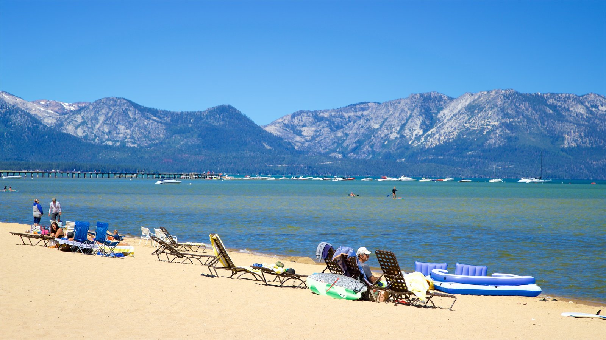
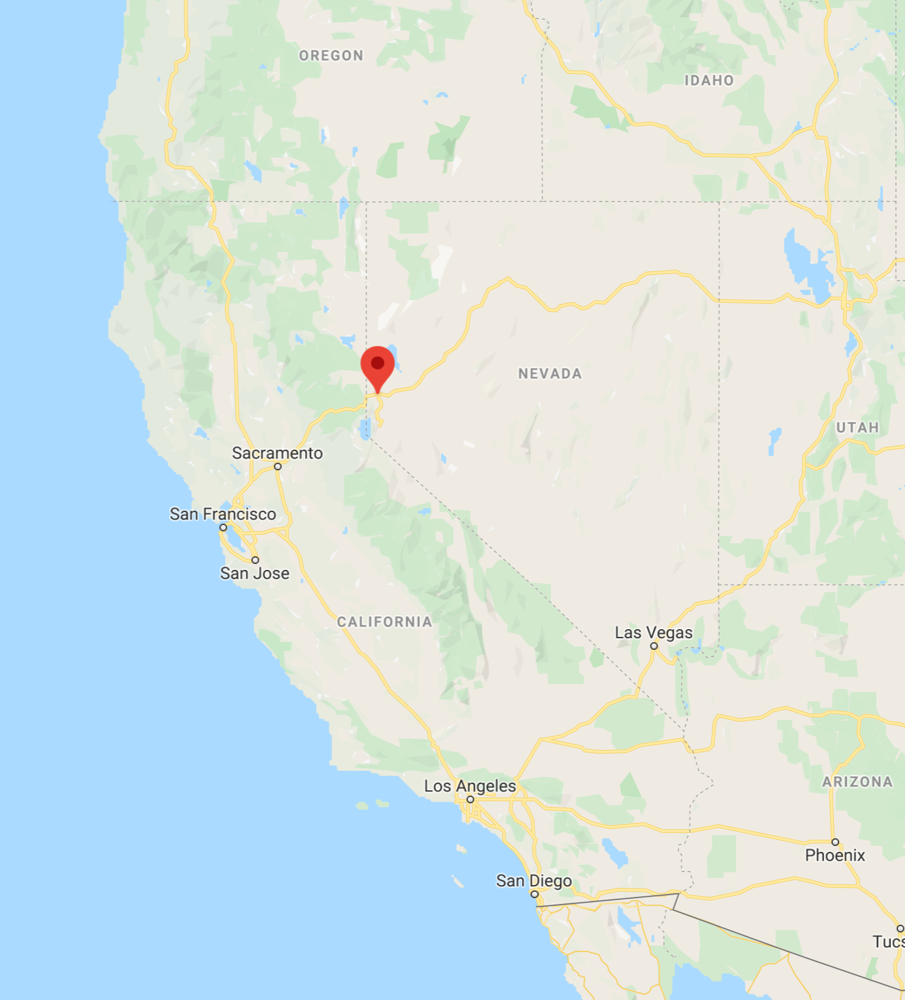
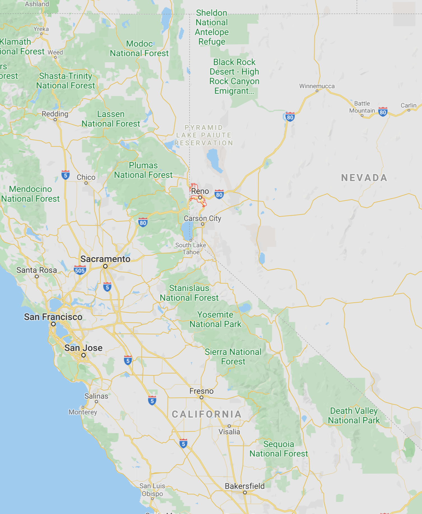
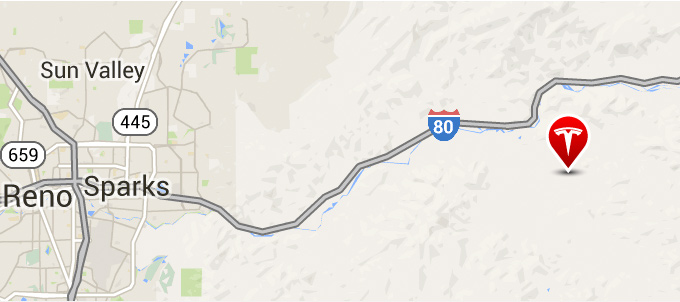
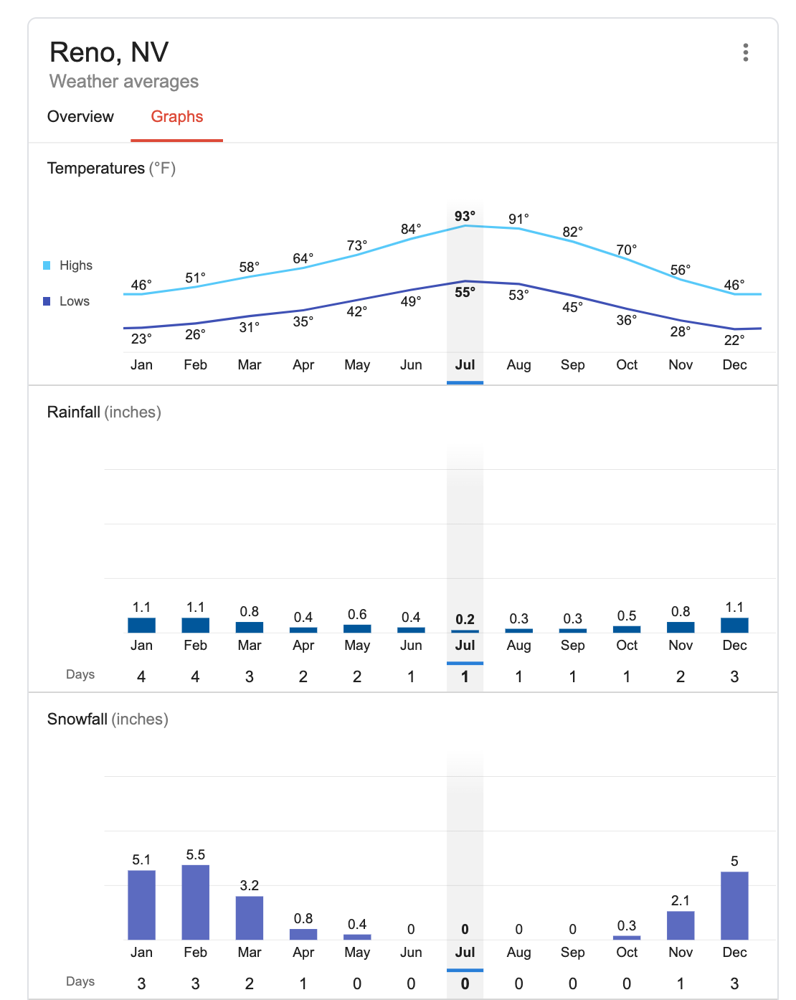

Preface
Though COVID-19 has been an inconvenience for many, it has allowed more and more people the autonomy to choose where they want to live. Seeing that my work could be done remotely for the foreseeable future and that my girlfriend, Carol, was willing to relocate with me since all of her classes would be remote, why not choose somewhere I want to live?
I thought about moving to Hawaii, New Zealand, or even a cabin in the middle of nowhere–a shot at Waldenponding (See Walden). However, out of all of the places in the world, I chose Reno. Hopefully, by the end of this article, you’ll learn why I’M moving to Reno and why YOU may want to move there someday, too.

Primary Considerations
I believe the number one factor that you should consider when moving is the proximity to family and friends (or the potential for new friends). Multiple sources have shown just how indispensable our relationships and communities are for life satisfaction and happiness. My parents, having used to live near San Jose, California, are planning on moving back to CA after they retire at the end of 2021. Additionally, many of my childhood, high school, and college friends live in Seattle or the Bay Area. Therefore, I decided that I wanted to be near either of those two places.
The next consideration for me was how I could align my move with some of my life goals. One of my goals is to climb the seven summits. (The highest mountain on each continent.) There’s no better training ground for climbing the seven summits than climbing real mountains at a high elevation. After Colorada and Alaska, the next best place in the US for climbing mountains is in the Sierra Nevada mountain range, located next to the border of CA and NV. There are a few tall mountains near Seattle, but there are only a few above 12,000 ft. Additionally, Mt. Rainier, one of two of Washington State’s 14ers, is technical, difficult to access, and is even one of the most dangerous volcanoes in the world. I would also get bored of climbing the same mountains over and over again. So, I narrowed my choices down to somewhere near the Sierra Nevada.
The next factor was the deciding factor for me. According to Robert Kiyosaki, author of Rich Dad, Poor Dad, Americans spend about 30% of their life’s income on taxes. Therefore, I wanted to live somewhere where I could keep more of the money that I made. The state income tax in California goes up to 13.3%, while its base sales tax is higher than any other state at 7.25%. Plus, since I could move anywhere, why would I want to live in the Bay Area where the average 1Br/1Ba apartment costs $2500-$3000/month? Although my boss said he would adjust my salary based on my local cost of living, high tax rates still mean I get to pocket less of what I make. Robert Kiyosaki’s net worth didn’t become $80 million by paying half his income in taxes, that’s for sure!
Now, where could I live to satisfy all three conditions above? None other than Reno, Nevada!
vs. San Francisco Bay Area
Though some common reasons why people dislike San Francisco include the traffic and homeless problem, none of them make San Francisco inhabitable. What can make San Francisco actually inhabitable, though, is a magnitude 7.0 earthquake.
According to the US Geological Survey, within the next 23 years, there’s a 72% chance that a magnitude 6.7 earthquake will hit the San Francisco Bay Area. To me, this makes the Bay Area unfit for settling or investing in, long-term.
Additionally, COVID-19 makes me especially wary of living in a city where you have to share public spaces with strangers such as corridors, elevators, stairs, washers, and dryers. The place I’m moving to in Reno not only has a private entrance, washer, and dryer but also only costs $700 per person per month, utilities included.
Moving to Reno isn’t just about short-term living but about trying to find a place where I can invest in the long term.
Supporting Reasons
The more and more research I did, the more I realized just how desirable Reno is/could become. Here are some supporting reasons why, even if Reno is not super sought-after right now, I predict it will be:
Reason 1: A Diverse Economy Fueled by Natural Resources and Pro-Business Politics
- 0% corporate and personal income tax
- Low-regulation environment
- “[Jeff] Bezos moved to Seattle to launch his startup in part because of Washington state’s favorable tax structure.” Like Seattle, Reno has a favorable tax structure for businesses.
One-of-a-kind states for businesses
Giga Nevada, Tesla’s first and largest Gigafactory, is just a 32-minute drive away from where I’ll be living.

- Nevada is one of the largest sources of gold in the world. 78% of US gold is mined in Nevada.
Reason 2: Attractive and Close to Existing Talent
- Great place for outdoor activities such as skiing, hiking, swimming, etc.
- Close enough to the Bay Area for local sources of talent.
- Tons of tech workers visit Lake Tahoe each year.
- A decent climate that’s cool at night even in the summer. It’s no San Francisco or San Diego, but it has four seasons, and its weather is milder than Michigan’s. 
Reason 3: Existing Growth
- Nevada Population Growth
- Housing Price Growth in Reno and Incline Village, NV.
- Like San Francisco, Incline Village is desirable amongst the ultra-wealthy. Examples of some of their residents include Warren Buffet and Larry Ellison, co-founder and former CEO of Oracle. (Source). A native of Incline Village told me that Incline Village is where the billionaires push out the millionaires.
The more I researched the Reno area, the more I realized how good an investment Reno could become.
Social Proof
Besides the reasons above, talking to my friends and family about this decision offered me additional social proof.
- A University of Michigan professor that I’ve been talking to, Walt Borland, is from Incline Village, Nevada, a 30-minute drive from Reno. He loves the area and is planning on moving back when he retires.
- It turns out that Andrei, the guy who sold me my used Honda Pilot, also lived in Reno for a few years. He loved it there.
- A few of my friends who have visited Reno or Lake Tahoe have said they loved the area.
- After talking to my parents, they told me that they used to drive by Reno all the time when they went skiing in Lake Tahoe. They loved the area.
- I even talked to two previous tenants of the place I was moving to, and they said they loved it there.
- My friend, Joe, who is living in Seattle, has also heard about Lake Tahoe’s beauties and is considering visiting.
- My sister, Jeni, who lives in LA, is also planning on going camping at Lake Tahoe.
So, it turns out that the Reno area was way more popular than I had initially imagined.
Conclusion
In summary, I picked Reno, Nevada because of its:
- Proximity to friends and family (within a 3.5-hour drive)
- Outdoors (the Sierra Nevada, Lake Tahoe, and National Parks such as Yosemite, a 2.5-hour drive away)
- Relatively cheap cost of living (no state income tax and low-cost housing)
Though my reasons for moving to Reno will not apply to everyone, I hope by reading this post, you’ve learned a bit more about the Reno area. It’s much easier to follow the herd at the peak of a hype cycle and move to places like San Francisco or Seattle, but just like with any sort of investing, I believe that the best rewards happen in life when you’re an early adopter.
So, yeah. That’s why I’m moving to Reno, Nevada!

Adios, Ann Arbor. Thanks for being my home for the past three years. 😊 I’m going to miss you!